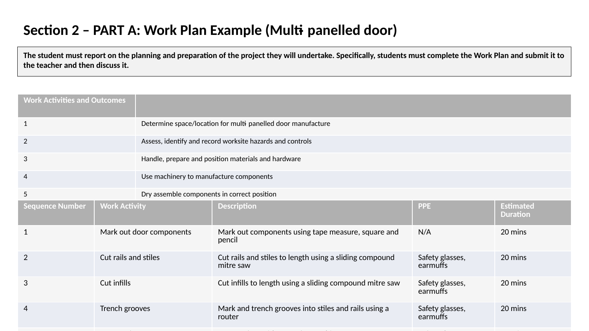
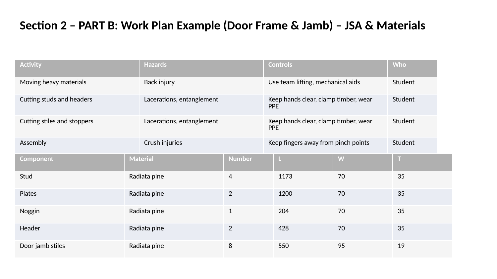

Scroll through the examples below. Each page corresponds to a different sample activity sheet.
Form Types Included:
- Construction Procedures / Work Plans - Step-by-step planning documents (Examples 3, 7, 9, 11)
- Job Safety Analysis (JSA) - Risk assessment and safety planning forms (Examples 4, 8, 10, 12)
- Gantt Charts - Project scheduling and timeline visualization (Example 5)
- Materials Lists - Comprehensive lists of required materials and quantities (Example 6)
- Skills Evaluation & Development Plans - Personal skill assessment and improvement planning (Example 13)
- Environmental Incident Reports - Documentation for environmental incidents and responses (Example 14)
- Safety Data Sheets (SDS) - Critical information about hazardous chemicals, health effects, and safety measures (Example 15)








You can also download the full set of examples as a PDF: